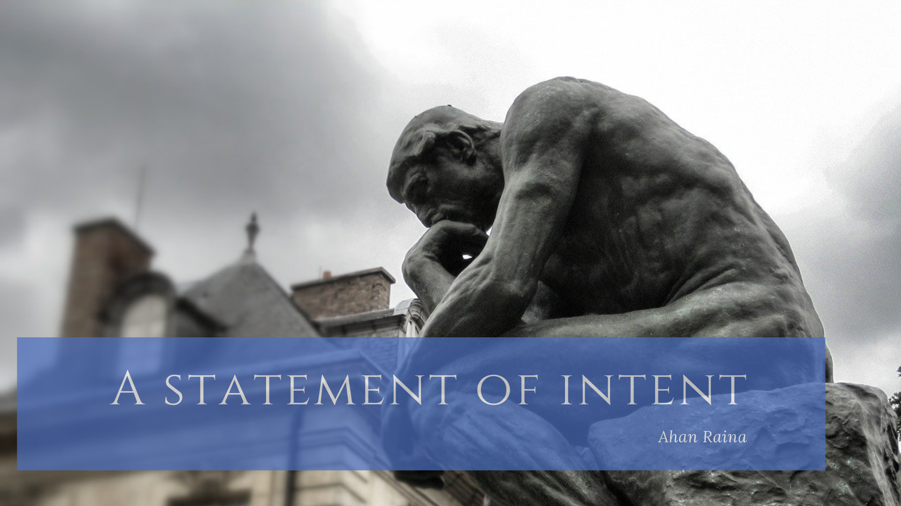
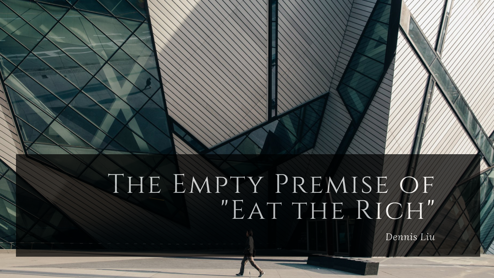
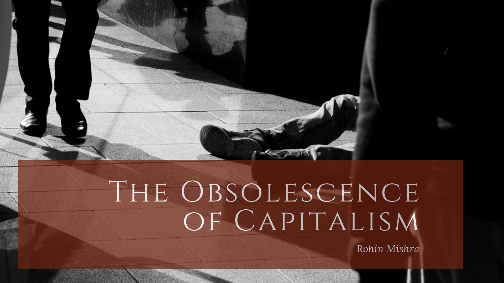
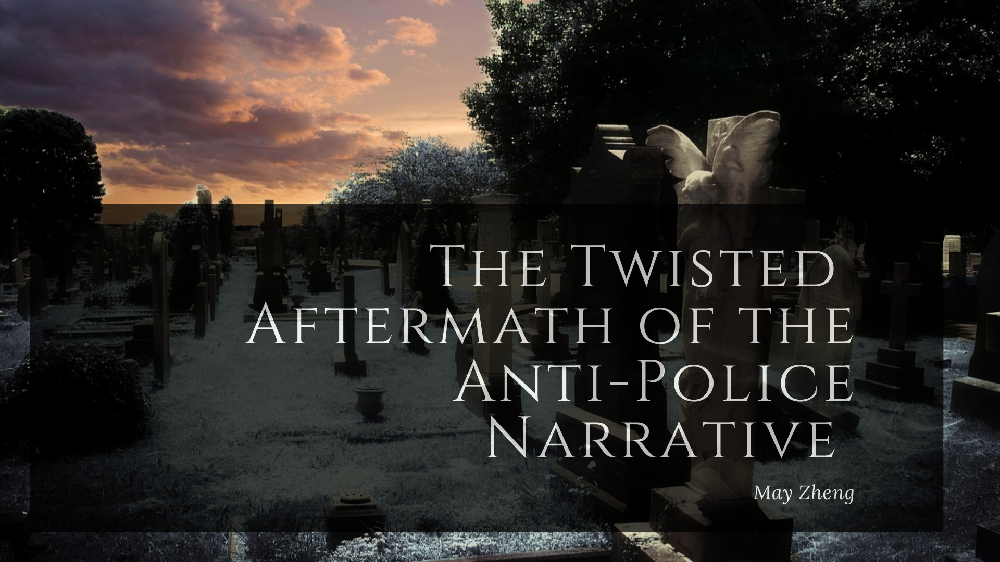

Issue Two
Recent Posts
Issue Two
The Gross Immorality of Abortion

Being pro-life is not about forcing a woman to pay for her mistakes. Being pro-life is about recognizing that every human life, no matter how small, no matter the circumstance from which it was conceived, has value.
Issue Two
Choice is Cool. Choice is Freedom
“How come when it’s us, it’s an abortion, and when it’s a chicken, it’s an omelet? - George Carlin”

Issue One
A Statement of Intent

What is the point of another publication claiming they know the truth, the way it all really is? Aren’t there enough blogs, newspapers, magazines, journals, news channels, and YouTube creators who think that they and they alone have the keys to progress and utopia?
Issue One
The Toxic Limits of Empathy

The prolonged digital nature of news consumption and activism leads to desensitization to the issues we claim to care the most about, excarberating the exchange of negativity in the context of our political and cultural discourse.
Issue One
The Defacement of Western Civilization
American society is not perfect, and it is not only moral, but patriotic, to want better for every single person living in it for the future. What is being witnessed on the streets of this nation, however, is not an attempt at progressive reform but rather at the regressive destruction of American history and culture.

Issue One
The Empty Premise of 'Eat the Rich'
As America faces rising wealth disparity and stagnant wages, socialism has grown increasingly popular while capitalism is being touted as a tool for inequality and injustice.
Issue One
The Story of Your Life: Narrative and Perspective
In the quirkier corners of internet literature, there is a writer who coins words to describe the multitude of complex feelings a person experiences, but language fails to describe - the Dictionary of Obscure Sorrows.
Issue One
A Diagnosis of The Public Education System's Shortcomings
The main focus of American attention should only be directed towards the amount of funding for public schools, but also to the distribution of funds among specific public schools.

Issue One
The Obsolescence of Capitalism
Albert Einstein, Martin Luther King Jr., George Orwell, Hellen Keller, Oscar Wilde, W.E.B Du Bois, Malcolm X, and more. Each of these figures are iconic shapers of history in their own right, but what unites them is a belief in socialism.
Issue One
Portland: America's Modern Experiment with Fascism
Portland, Oregon. Quite the conundrum. Federal agents have run amok in the city, black-bagging (kidnapping) innocent protesters, refusing to identify themselves, breaking the hand of a calm Navy veteran in two places, and tear-gassing groups of Portland moms without the consent of the city.

Issue One
The Twisted Aftermath of the Anti-Police Narrative
In fact, the narrative of the police are at the front lines of a systemic, society-wide “war on blacks” is the direct cause for an increase in interracial violence in colored communities, ultimately amounting to more deaths in the very groups that the movement preaches to empower.